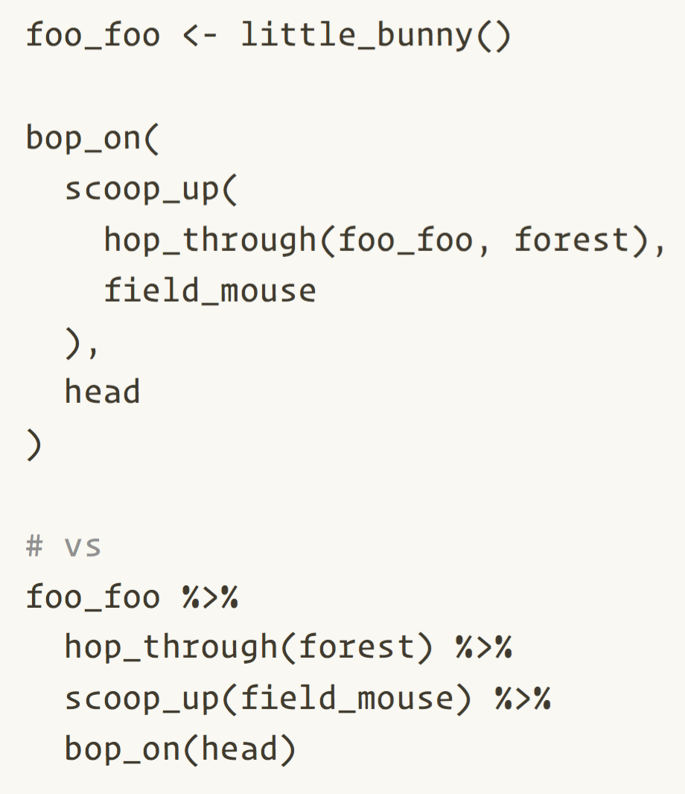

── Attaching core tidyverse packages ──── tidyverse 2.0.0 ──
✔ dplyr 1.1.2 ✔ readr 2.1.4
✔ forcats 1.0.0 ✔ stringr 1.5.0
✔ ggplot2 3.4.2 ✔ tibble 3.2.1
✔ lubridate 1.9.2 ✔ tidyr 1.3.0
✔ purrr 1.0.1
── Conflicts ────────────────────── tidyverse_conflicts() ──
✖ dplyr::filter() masks stats::filter()
✖ dplyr::lag() masks stats::lag()
ℹ Use the conflicted package (<http://conflicted.r-lib.org/>) to force all conflicts to become errorsIntroduction
Licensing
This work is licensed under Creative Commons Zero v1.0 Universal.
Instructors
Crystal Lewis
Shannon Pileggi

Peter Higgins

Scope

Taming the Data Beast, from Allison Horst’s Data Science Illustrations
Schedule
| Time | Activity |
|---|---|
| 11:00 - 11:50 | Crystal Lewis (Data management best practices) |
| 11:50 - 12:00 | Break |
| 12:00 - 12:50 | Shannon Pileggi (Data cleaning fundamentals) |
| 12:50 - 12:00 | Break |
| 01:00 - 02:00 | Peter Higgins (Data wrangling & reshaping) |
Please add any questions to the public Zoom chat. These may be answered in the moment or addressed at the end depending on context.
Syntax aside
Pipes
2014+ magrittr pipe
%>%2021+ (R \(\geq\) 4.1.0) native R pipe
|>
2022 Isabella Velásquez Understanding the native R pipe |> https://ivelasq.rbind.io/blog/understanding-the-r-pipe/
. . .
whatever(arg1, arg2, arg3, ...)
arg1 |>
whatever(arg2, arg3)mean(0:10)
0:10 |>
mean()R for Data Science: Ch 18 Pipes

Namespacing
dplyr::select()
tells R explicitly to use the function
selectfrom the packagedplyrcan help to avoid name conflicts (e.g.,
MASS::select())does not require
library(dplyr)
. . .
library(dplyr)
select(mtcars, mpg, cyl)
mtcars |>
select(mpg, cyl) # library(dplyr) not needed
dplyr::select(mtcars, mpg, cyl)
mtcars |>
dplyr::select(mpg, cyl)